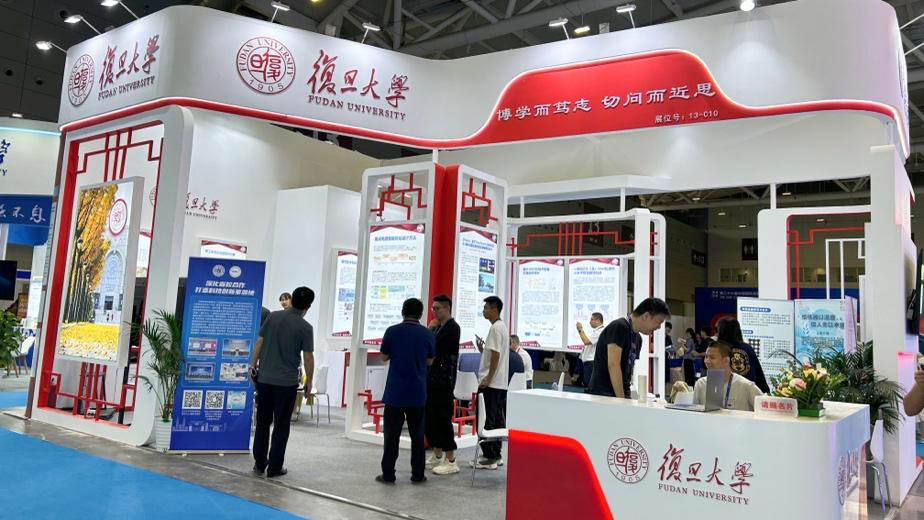

学生内部网
教师内部网
查看日志
导航
首页
学院概况
学院简介
组织架构
教工之家
职能部门
历史沿革
师资队伍
在职教师
按职称
按拼音
人才计划
国家杰出青年科学基金...
973 首席科学家（青年...
国家自然科学基金优秀...
教育部新世纪优秀人才...
上海市领军人才
上海市优秀学术带头人...
上海市青年拔尖人才计...
上海市曙光计划
上海市晨光计划
上海市启明星计划
上海市浦江人才计划
上海市扬帆计划
兼职客座
退休教师
B
C
D
F
G
H
J
K
L
M
N
P
Q
S
T
W
X
Y
Z
人才培养
本科生教学
教学动态
专业介绍
培养方案
常用文档
研究生教学
教学动态
招生信息
培养方案
课程建设
学位申请
非全专硕
教学成果
精品课程
一流课程
教学成果奖
课程思政
工作动态
建设成果
机构设置
相关文档
科学研究
科研快讯
科研机构
省部级科研平台
校级科研平台
学科方向
科研成果
国家级奖项
省部级奖项
学生工作
学生活动
通知公告
党建思政
二十大专栏
理论学习
不忘初心 牢记使命
经典文献
政策法规
党建动态
工青妇建
工会活动
青年联谊
妇女风采
退休园地
退休动态
退休党建
退休风采
对外交流
交流动态
海外交流
合作高校
学生交流
教师交流
校友中心
院友会
活动纪实
院友风采
理事会
章程
发展基金
新闻动态
基金项目
捐赠指南
捐赠鸣谢
新闻速递
复旦大学计算机科学技术学院荆一楠、王晓阳、何震瀛荣获 2024年度“吴文俊人工智能科学技术奖”技术发明奖二等奖
2025-02-28
2025年2月20日，中国人工智能学会正式公布2024年度吴文俊人工智能科学技术奖获奖名单。复旦大学计算机科学技术学院荆一楠副教授、王晓阳教授、何震瀛教授等牵头，与星环信息科技（上海）股份有限公司联合申报的“多场景大数据智能交互式分析关键技术及应用”荣获技术发明奖二等奖。吴文俊人工智能科学技术奖被誉为“中国智能科学技术最高奖”，于2011年起设立，每年评选一次，旨在通过奖励机制表彰在我国智能科学技术领域取得重大科技突破、贡献卓著的先进代表人物和组织，充分调动我国智能科学技术工作者的积极性和创造性。（完整获奖名单详见中国人工智能学会发布的“2024年度吴文俊人工智能科学技术奖奖励公告”）荆一楠副教授 王晓阳教授 何震瀛教授“多场景大数据智能交互式分析关键技术及应用”面向数字化转型中的智能数据分析需求，针对大数据分析系统的易用性和时效性问题，通过结合人工智能和大数据技术，突破AI增强的智能数据交互式分析技术、智能数据分析中的文本数据挖掘与联邦学习技术、面向低延迟交互式分析的查询优化技术等关键技术。“多场景大数据智能交互式分析关键技术及应用”的出现，使得通用的大数据分析产品具备了在给定的行业
全文》
计算机学院成功举办2025年退休教职工辞旧迎新茶话会
2024-12-26
2024年12月26日上午，复旦大学计算机科学技术学院在邯郸校区逸夫楼隆重举办了退休教职工茶话会。此次活动旨在增进退休教职工之间的交流与联系，共同庆祝新年的到来，并展望计算机学院的美好未来。上午9时30分，伴随着主持人的开场致辞，茶话会正式拉开帷幕。主持人高海锋以热情洋溢的语调宣布：“2025年计算机学院退休教职工辞旧迎新茶话会现在开始！”这一宣布瞬间点燃了现场的气氛，退休教职工们纷纷鼓掌表示欢迎。随后，学院党委书记王新发表了致辞。他首先对各位退休教职工的到来表示热烈的欢迎和衷心的感谢，并简要回顾了过去一年学院在教育教学、科研创新、社会服务等方面取得的显著成就。同时，他也展望了新的一年，希望各位退休教职工能够继续关心和支持学院的发展，为学院的腾飞贡献自己的力量。学院院长杨珉也发表了讲话。他首先对退休教师的辛勤付出和无私奉献表示崇高的敬意。同时，他也向各位退休教职工通报了学院未来的发展规划和愿景，希望他们能够继续发挥余热，为学院的繁荣与发展添砖加瓦。在茶话会的文艺表演环节，K歌兴趣小组的汇报演出为现场增添了不少欢乐气氛。小组成员们登台献艺，用歌声传递着新年的祝福和喜悦。他们的精彩表演赢得
全文》
计算机科学技术学院成功举办2024年复旦大学程序设计竞赛
2024-12-16
12月14日下午，2024年复旦大学程序设计竞赛在邯郸校区成功举行。本次比赛由复旦大学计算机科学技术学院主办，复旦大学程序设计竞赛队承办。今年程序设计竞赛的网络预选赛参与人数超过150人。最终，共有来自全校16个不同专业的55名同学通过选拔进入现场总决赛。比赛现场经过4个小时的激烈角逐，2022级计算机科学技术专业的陈逸嘉凭借6题的通过数和罚时优势成为本场比赛的冠军。在颁奖典礼上，计算机科学技术学院副院长吴杰教授和程序设计竞赛队总教练孙未未教授现场致辞。随后，吴杰教授、孙未未教授和字节跳动公司校园招聘经理陈飞先生为获奖学生颁奖。吴杰副院长（左二）和孙未未总教练（右一）为全场总冠军陈逸嘉（左一）和女生组冠军胡馨月（右二）颁奖华为、字节跳动和腾讯三家公司作为本次大赛的赞助商，向参赛选手介绍了各自的企业文化，为参赛选手提供了直接了解 IT 企业的机会和平台。赞助奖品总决赛参照 ICPC（国际大学生程序设计竞赛）规则进行，比赛过程中参照正式 ICPC 比赛的惯例为选手们发放象征着 “AC（通过题目）” 的气球，即每通过一题，发放题目对应颜色的气球。这样既活跃了现场的气氛，也鼓励同学们通过更多的
全文》

祝贺！复旦大学计算机科学技术学院科研团队荣获高交会2项优秀科研成果创新奖
2024-12-02
2024年11月14日至16日，第二十六届中国国际高新技术成果交易会（简称“高交会”）在深圳圆满落幕。在这场科技盛宴中，复旦大学计算机科学技术学院张奇教授团队的“智工知语企业级知识引擎”、金城教授团队的“书画数字化生成-马良大模型”获得高交会优秀科研成果创新奖。图：复旦大学展区优秀科研成果创新奖获奖项目：智工知语企业级知识引擎“智工知语企业级知识引擎”致力于构建高效的企业信息管理和决策支持系统，支持文本、语音等多模态的知识检索，以提升企业的知识管理效率。在新型工业化浪潮中，智工知语凭借其创新的知识管理体系，正逐渐成为推动工业领域数字化转型与智能化升级的关键力量。x图：智工知语展台智工知语可以赋能员工，能够使他们更迅速地获取所需知识，提升个人能力。团队依托这一平台，可实现知识的共享与协作。图：智工·知语在设计助手方向应用智工知语还能够与 ERP、MES 等系统无缝对接，构建一个高效互联、功能全面的企业大模型应用平台。在这个平台上，智能数据问答简化了数据查询过程；多模态知识检索让知识获取更加全面且准确；故障经验库查询帮助员工快速定位并解决问题。智能写作与图表生成功能也能够显著提升文档编写与
全文》
复旦高质量成果亮相高交会，喜获多项优秀科研成果创新奖
2024-11-21
11月14日至16日，第二十六届中国国际高新技术成果交易会（简称“高交会”）在深圳举办，复旦大学在信息技术、生物医药、新材料等多个领域的13项成果参展，其中12个项目参与报奖并全部获得优秀科研成果创新奖，获奖数在高校和科研院所等所有参展单位中名列前茅。据悉，此次参展项目包括工研院教授陈颉的“全自动免疫荧光分析仪”、基础医学院教授于敏的“一种抗PD-1c-Met抗原的小分子双特异性抗体”和“基于3D打印技术制备无痛给药微针”、基础医学院教授朱棣的“肿瘤免疫疗法”、基础医学院教授应天雷的“用于慢乙肝治愈的新型疫苗”、物理学系研究员吴赛骏的“高效复合声光调制系统及应用”、信息科学与工程学院研究员沈超的“水下无线光通信用高速蓝光激光器芯片”、计算机科学技术学院教授金城的“书画数字化生成-马良大模型”、计算机科学技术学院教授张奇的“智工知语企业级知识引擎”、微电子学院教授曾璇的“集成电路智能优化设计方法”、大数据学院副教授王健的“4D毫米波-视觉融合感知技术”、药学部研究员曾湖烈的“微球单分子荧光酶联免疫技术”、高分子科学系彭慧胜院士与研究员王兵杰的“全柔性发光纤维”。今年的高交会展台上，生物医
全文》
祝贺！复旦大学计算机科学技术学院科研团队荣获2项上海市科学技术大奖
2024-11-05
2023年度上海市科学技术奖于2024年10月23日上午揭晓。其中，计算机学院姜育刚教授团队荣获技术发明一等奖，钱振兴教授团队荣获科技进步奖二等奖。2023年度“上海市技术发明奖”一等奖获奖项目：面向智能制造的跨域融合感知关键技术及应用智能感知旨在利用目标定位、参数测量、缺陷检测等技术实现对场景的自动化、智能化分析，是智能制造中不可或缺的一环。然而，传统智能感知技术往往基于丰富的自然场景数据发展而来，忽视了智能制造场景数据的特点，如目标尺寸差异大、测量场景范围宽、缺陷样本数量少等，导致性能受限。项目发明了跨尺度融合的目标定位技术、跨维度融合的视觉测量技术、跨分布融合的缺陷检测技术，构建了面向智能制造的高精度感知技术体系。项目成果被广泛应用，取得显著经济社会效益。基于本项目发明技术研制的机车车身焊缝打磨装置基于本项目发明技术研制的轮胎缺陷检测系统界面姜育刚教授领衔的团队在人工智能领域有长期的研究积累，理论成果近期获2023年度国家自然科学二等奖。此次获奖项目成果是团队将通用智能感知技术“跨域”适配到制造场景的有效尝试，在制造场景成功验证了机器人主动视觉感知技术。团队正聚焦“具身智能”方向
全文》
计算机科学技术学院CodeWisdom团队在软件工程领域顶级国际会议ISSTA 2024上发表多项研究成果
2024-10-28
复旦大学计算机科学技术学院CodeWisdom团队（暨复旦大学软件工程实验室）在2024年国际会议ISSTA（International Symposium on Software Testing and Analysis）上，发表了多项研究成果。ISSTA是软件工程领域公认的权威性顶级国际会议之一，也是中国计算机学会推荐的软件工程领域A类会议，汇集了学术界与工业界研究人员，共同探讨软件测试与分析的新进展与新趋势。 ISSTA 2024共录用143篇论文，录用率为20.6%。关于开源软件许可证分析的论文《Your “Notice” Is Missing: Detecting and Fixing Violations of Modification Terms in Open Source Licenses during Forking》对开源许可证中的修改条款开展了经验研究，总结了修改条款所涵盖的代码修改范围、约定义务的内容构成、格式规范及位置。研究发现在所选择的107个开源许可证中，接近半数明确包含了关于修改条款的阐述，并清晰界定了修改后需履行的相应义务，即提交修改日志（Notic
全文》
祝贺！计算机科学技术学院张凯老师获评“英特尔中国学术英才计划荣誉学者”
2024-10-28
8月14日，英特尔中国学术峰会暨“英特尔中国学术英才计划荣誉学者”颁奖典礼在宁波举行。经过候选人之间激烈的角逐，我院教师张凯因在数据库系统与GPU异构计算领域的突出贡献成功入选，成为2024年度全国9名获奖者之一。张凯，复旦大学计算机科学技术学院副教授，博士生导师，入选上海市扬帆人才计划。2016年博士毕业于中国科学技术大学，曾于2013-2015在The Ohio State University 任Visiting Scholar，2016-2017年于National University of Singapore任Research Fellow。主要研究方向为并行与分布式计算，数据库系统，人工智能系统。近年来于SIGMOD、NSDI、VLDB、ICDE、CCS、VLDBJ等顶级会议期刊发表论文三十余篇，研究成果获得包括CCF自然科学二等奖等多个奖项。本次获得英特尔中国学术英才计划荣誉学者，是基于近年来张凯老师于数据库与异构计算领域的卓越贡献，代表性工作包括发表于VLDB 2024的工作RTScan首次利用了GPU中的光线追踪核心大幅提升数据库算子性能，获得了远超CPU与CUDA
全文》
计算机科学技术学院（国家特色化示范性软件学院）举行2024年迎新大会
2024-09-22
计智创新，梦想起航。9月22日下午，计算机科学技术学院（国家特色化示范性软件学院）2024年迎新大会在邯郸校区光华楼东辅楼吴文政报告厅隆重举行。出席迎新大会的有复旦大学首席教授吴立德先生和夫人吴霭成教授，学校教务处、党委研究生工作部、招生办公室等职能部处负责同志，计算机学院班子成员、党委委员、教师和校友代表，大数据研究院和人工智能与创新产业研究院教师代表，计算机学院2024级全体新生和2023级本科生线下线上参会。迎新大会由计算机学院副院长彭鑫主持。大会在全体师生雄壮的国歌声中拉开序幕。计算机学院院长杨珉首先向新生介绍学院情况。杨珉从发展历程、学科情况、教师队伍、教学科研、人才培养、就业生涯、学生工作等多角度切入，从历史的成就到新时代奋进，为新生徐徐展开计算机学院的恢弘画卷。他表示，复旦计算机学科的发展是历代复旦计算人接续奋斗的宝贵成果，激励同学们立足计算机学科，做到个人全面发展的同时，成为祖国未来的栋梁之材。本科生院副院长、教务处处长林伟在发言中，向计算机学院全体新生表示祝贺，向计算机学院全体教师对创新人才培养所作出的贡献表达感谢，他表示，计算机学院教学科研成绩有目共睹，为复旦学生的
全文》
计算机科学技术学院成功举办第九期步青讲坛
2024-09-21
9月6日下午，复旦大学计算机科学技术学院第九期“步青讲坛”在江湾校区二号交叉学科楼E1023会议室举行。本期讲坛特别邀请了ACM、 IEEE Fellow，伊利诺伊大学计算机系杰出教授俞士纶（Philip S.Yu）做《图数据大模型研究前瞻》的学术报告。报告会由计算机科学技术学院院长助理钱振兴教授主持。会上，钱振兴首先代表学院对俞士纶教授的到来表示热烈欢迎，并为大家介绍了“步青讲坛”的背景。随后，计算机科学技术学院教授、上海市数据科学重点实验室副主任熊贇介绍了俞士纶教授的研究方向和学术成就。在报告中，俞教授介绍了近年来图基础模型的发展，分享了他在图基础模型方面研究的洞见。图本身是一种描述对象之间关系的复杂非欧结构，然而传统的图基础模型在欧式空间上进行表示学习，具有一定局限性。为此他提出，允许采用不同曲率的空间表示图上的多种结构是图基础模型的发展方向。在这个方向上，俞教授已经做了大量研究，他向大家展示了自己的最新研究进展，这些最新研究开拓了在场师生们的思路，在现场引起了热烈的讨论。讲坛的最后，计算机科学技术学院数据科学方向负责人汪卫教授为俞教授颁发了感谢牌，大家合影留念。“步青讲坛” 第
全文》
复旦大学计算与智能创新学院2024级新生见面会圆满举行
2024-09-19
时维九月，金秋送爽，复旦大学计算与智能创新学院迎来了首届本科新生。9月8日，计算与智能创新学院2024级新生见面会在邯郸校区计算中心A306会议室隆重举行。出席见面会的有中国工程院院士邬江兴、方滨兴、柴洪峰、蒋昌俊、于海斌，中国科学院院士褚君浩、尹浩，学校发展规划处、教务处、研究生院、学生工作部、招生办等职能部处负责同志，计算机科学技术学院、大数据研究院、人工智能创新与产业研究院、大数据学院、数学科学学院等班子成员、党委委员，新生辅导员、班导师，学生工作、教学管理团队的老师，24名计算与智能创新学院领军人才班新生和36名相辉学堂“香农计划”新生。见面会由计算机学院院长杨珉主持。在第40个教师节到来之际，学生代表向院士献花，拉开了见面会的序幕。本科生院副院长、教务处处长林伟首先对支持计算与智能创新学院建设的老师们表达感谢，向首批加入学院的新生们表示祝贺和欢迎。在致辞中，他分享了对新生们的三点期望：第一，顶天立地；第二，心灵手巧；第三，共同创新。他表示，希望同学们在已有的基础上不断提升自我，将学问做深做透，通过沟通与交流感受复旦文化，在学习中实践，在实践中学习。他激励师生共同努力，将学院建
全文》
复旦大学计算机科学技术学院获批国家自然科学基金项目18项
2024-09-19
日前，国家自然科学基金委员会公布了2024年度集中申报期项目的评审结果。本次评审复旦大学计算机科学技术学院共有18个项目成功获批立项，其中，专项项目1项、面上项目6项，青年科学基金项目11项。序号负责人项目名称项目类别1黄萱菁大模型价值观和安全对齐策略研究专项项目2董震基于优化搜索的智能CPS时序错误检测技术研究面上项目3王新分离式内存架构下数据可靠性保障机制研究面上项目4吴祖煊基于生成式预训练的视频内容理解方法研究面上项目5颜波融合知识的光流估计研究面上项目6张谧安全规约驱动的大语言模型自主向善发展研究面上项目7张奇大语言模型复杂工具学习关键技术研究面上项目8戴嘉润基于仿真测试的智能驾驶系统预期功能安全测评方法青年科学基金项目9黄橙模式隐藏的高性能隐私保护信息搜索研究青年科学基金项目10李元超低深度超级浓缩器的构造和应用青年科学基金项目11刘名威融合大模型与知识图谱的软件缺陷定位方法研究青年科学基金项目12马晨曦跨光谱成像知识融合的多模态双目立体图像增强研究青年科学基金项目13潘旭东基于一致性分析的大语言模型第三方工具交互安全研究青年科学基金项目14彭万里面向在线聊天场景的生成式隐写
全文》
校党委书记裘新一行调研计算机科学技术学院AI大课建设工作
2024-09-11
新学年，学校基于人工智能发展特点及全校“普及圈”“核心圈”“进阶圈”的AI和AI+人才培养需求“画像”，构建了一个本研一体化设计，通识、核心、学科、垂域有机结合的进阶式人工智能课程体系。作为AI大课的中坚力量，计算机科学技术学院的大课建设工作受到学校学院的高度重视。9月5日下午，由校党委书记裘新带队，AI大课建设团队到计算机科学技术学院党委调研AI大课建设情况，与AI大课骨干授课教师座谈交流。会前，裘新等老师看望慰问了中国工程院院士、复旦大学大数据研究院院长、计算机学院邬江兴教授，中国工程院院士、复旦大学金融科技研究院院长、计算机学院柴洪峰教授，复旦大学社会智能研究中心首席科学家、计算机学院傅晓明教授和人工智能创新与产业研究院陈曦教授。AI大课建设院士专家，计算机学院、人工智能创新与产业研究院、金融科技研究院、空间互联网研究院课程负责老师，计算机学院班子成员、党委委员、教工党支部书记、学工团队和教务团队负责人参加座谈会。会议由计算机学院院长杨珉主持。座谈会上，计算机学院党委书记王新首先从学院党委对AI大课的认识与研判、为AI大课开展的工作以及对AI大课的思考与建议三个方面介绍学院AI大
全文》
教师节快乐！计算机科学技术学院开展教师节慰问活动
2024-09-10
今天是第40个教师节，计算机科学技术学院洋溢着浓厚的节日氛围。下午1时许，副校长汪源源莅临计算机科学技术学院，看望并慰问复旦大学社会智能研究中心首席科学家傅晓明教授。计算机科学技术学院党委书记王新、院长杨珉陪同。交谈中，汪源源关切询问了傅晓明教授的教学、科研和生活状况，对其为学校AI4SS(AI for Social Science)战略发展作出的贡献表示了感谢。同时，汪源源希望傅老师继续发挥好跨学科研究的示范引领作用，助力社会科学研究新范式发展和学科交叉人才培养。傅晓明表示，在未来的工作中，将充分发挥自身学术科研优势，立足本职，再接再厉，为人工智能与社会科学双向赋能作出新的更大贡献，为学校的繁荣发展贡献自己的智慧和力量。中午时分，为大力弘扬教育家精神，增进院内教师之间的交流和互动，计算机科学技术学院工会组织开展了教师节座谈活动。王新，杨珉，学院党委副书记张玥杰，副院长吴杰、彭鑫，以及新进教职工代表曹艺馨、邓智友、葛治文、刘天弼、马笑萍、徐增林、张凯，AI大课授课教师代表李斌、邱锡鹏、尚笠和职能部门代表姚晓枝、冯颖欣、王静然等参加座谈会。会议由张玥杰主持。座谈会伊始，张玥杰向与会教师介
全文》
祝贺！计算机科学技术学院系统软件与安全实验室团队获评复旦大学2024年“钟扬式”科研团队
2024-09-10
9月6日，复旦大学召开“大力弘扬教育家精神，加快建设教育强国”2024年教师节庆祝大会。现场公布并表彰了2024年获奖的10位“钟扬式”好老师、5支“钟扬式”教学团队和5支“钟扬式”科研团队。计算机科学技术学院系统软件与安全实验室团队（团队带头人：杨珉）获评复旦大学2024年“钟扬式”科研团队。▲表彰现场（左七：杨珉老师）·团队主要事迹·系统软件与安全实验室团队秉持“为国家铸坚盾，为行业育英才”的初心，将培养国家需要的一流实战型网安人才、提升我国网络空间的安全攻防能力、建设具有中国特色的网络治理体系作为主要目标，长期致力于移动系统安全、人工智能安全、无人驾驶系统安全、区块链安全、隐私保护等网络空间安全领域的技术和治理研究，在人才培养、科研创新、社会服务、团队建设等方面取得丰硕成果。一、使命担当，特色育人团队针对网络安全人才“政治要求高、学科跨度大、攻防博弈强”的特点，以培养国家需要的一流实战型网安人才为目标，探索构建了“德育先行，教赛研产融合并举”的网络安全育人体系。团队教师全员投入，探索构建言传、身教、实践并举的全过程多角度德育教育体系，在学生培养各环节融入理想信念教育，以家国情怀为
全文》
祝贺！计算机科学技术学院颜波老师获评复旦大学2024年“钟扬式”好老师
2024-09-10
9月6日，复旦大学召开“大力弘扬教育家精神，加快建设教育强国”2024年教师节庆祝大会。现场公布并表彰了2024年获奖的10位“钟扬式”好老师、5支“钟扬式”教学团队和5支“钟扬式”科研团队。计算机科学技术学院颜波老师获评复旦大学2024年“钟扬式”好老师。▲表彰现场（左四：颜波老师）一、教师简介和育人事迹颜波，复旦大学计算机科学技术学院教授、博导，教育部长江学者现任学校发展规划处副处长、计算机科学技术学院学术委员会副主任、计算机科学与技术一级学科负责人和博士后流动站站长、上海市图像图形学学会副理事长。产教融合育人，因材分类施教。在学术上勇于探索，将师德修养和专业学识融入育人环节，主讲《编译》和《计算机图形学》等多门课程，教学经验丰富；与产业界密切合作，将产教融合融入育人环节，指导学生在Nature Methods、IEEE Trans.等国际期刊和CCF-A类国际会议发表论文70余篇，相关学术成果在华为旗舰手机、公安系统和三甲医院得到了较好产业应用。指导1名本科生获首届NSFC“青年学生基础研究项目”资助；1名博士后获得“博士后创新人才支持计划”资助；研究团队学术氛围宽松浓厚，获“2
全文》
计算机科学技术学院成功举办第八期“步青讲坛”
2024-09-03
8月20日上午，复旦大学计算机科学技术学院第八期“步青讲坛”在江湾校区二号交叉学科楼E1023会议室举行。本期讲坛特别邀请了ACM, IEEE, and ATT Fellow、加州大学河滨分校的K. K. Ramakrishnan教授作学术报告，吸引了学院众多师生前来聆听。报告会由欧洲科学院院士、复旦大学社会智能研究中心首席科学家、哥廷根大学中德社会计算研究所傅晓明教授主持。学院党委书记王新在致辞中，代表学院对K. K. Ramakrishnan教授的到来表示热烈欢迎，并向现场师生详细介绍了他的学术背景及代表性工作。K.K. Ramakrishnan教授是网络与通信系统领域的杰出学者，在过去的几十年里，他为互联网的发展做出了开创性贡献，研究成果对未来网络的发展具有重要影响。今年，K. K. Ramakrishnan教授荣获了网络领域的最高荣誉——SIGCOMM终身成就奖。在讲座中，K. K. Ramakrishnan教授以《从构建软件驱动的网络与云网络中汲取的经验与教训》为题，分享了他在软件化网络特别是5G网络核心控制面的研究进展，着重介绍了他与团队在构建低延迟的5G网络控制面的过程中
全文》
计算机科学技术学院党委连续召开两场“AI大课”动员会
2024-09-02
为进一步做好新学期“AI大课”建设工作，确保课程顺利开展，8月31日和9月1日，计算机科学技术学院党委通过线上会议方式相继召开“AI大课”开课动员会和助教培训动员会。8月31日（周六）20点，计算机学院党委书记王新主持召开“AI大课”开课动员会。计算机学院党委委员、学院班子成员、教工党支部书记，计算机学院、人工智能创新与产业研究院、金融科技研究院、空间互联网研究院课程相关全体教师参加会议。会上，计算机学院院长杨珉代表学校“AI大课”建设工作组首先发言，介绍了“AI大课”的背景及学校的相关要求。他强调，“AI大课”是学校为响应教育部和上海市委的号召，结合当前科技发展趋势和中国高校教育模式改革需求，旨在以“AI素养-AI能力-AI创新”赋能复合型人才培养的一项重要举措。这一课程是继“思政大课”后，学校教育模式改革的又一重大探索。希望各位授课教师可以代表计算机学科打好“第一仗”。副院长吴杰介绍了AI通识基础课程和AI专业核心课程的建设情况。他表示，“AI大课”的建设既是挑战也是机会，通过课程能够培养更多具备人工智能素养的学生，对计算机整体学科发展有重要意义。本科教学业务条线将继续支持授课教师
全文》
每页
18
记录
总共
989
记录
第一页
<<上一页
下一页>>
尾页
页码
1
/
55
跳转到
重要通知
复旦大学2025年信息学学科冬令营 报名通知
12-23
复旦大学计算机科学技术学院2025年博士研究生招生“申请-考核”制选拔办法
11-30
2023-2024学年计算机科学技术学院 社会冠名奖学金拟获得者公示
11-08
更多
学生活动
同心协力，顽强“乒”搏 | 我院乒乓球队获2022年复旦大学“院系杯”团体赛冠军
09-30
计算机学院召开学生发展对象座谈会
11-22
师说心语｜彭鑫老师专访
07-30
更多
讲座信息
11.19 | AI Networking for Remote CV: A Use Case in Subway E-Ticketing
11-19
08.16｜Symmetric Exponential Time Requires Near-Maximum Circuit Size
08-12
07.03 | 时间约束的极早检测 Early Detection of Temporal Constraint Violations
07-01
更多